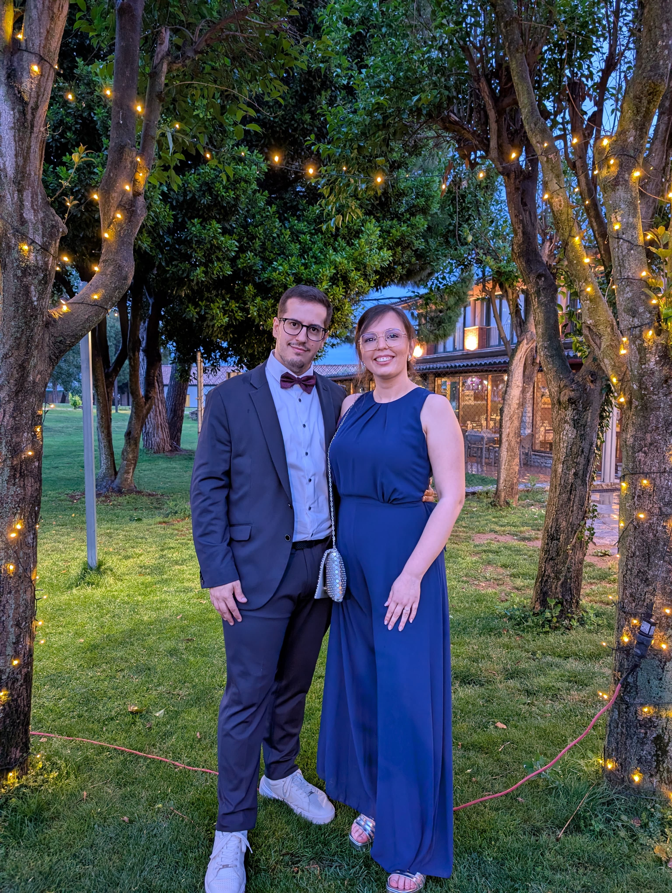

Hotel America Igualada
Hotel urba a Igualada, ben connectat amb l'A-2, amb aparcament gratuit per a clients, Wi-Fi i cafeteria.
Veure hotelViatge i estada
Allotjament
Hotel urba a Igualada, ben connectat amb l'A-2, amb aparcament gratuit per a clients, Wi-Fi i cafeteria.
Veure hotelHotel singular al barri del Rec d'Igualada, situat en una antiga adoberia, amb restaurant i aparcament gratuit proper.
Veure hotelPetit hotel amb encant a Jorba, a uns minuts d'Igualada, amb entorn tranquil, aparcament i connexio directa amb l'A-2.
Veure hotelMobilitat
El servei de taxi d'Igualada funciona les 24 hores. Per a trajectes curts entre Odena i Igualada, Rome2Rio estima uns 7 minuts i un cost orientatiu d'11 a 14 euros.
Hi ha connexions d'autobus entre Odena i Igualada. L'Ajuntament d'Odena referencia La Hispano Igualadina, Masats TG i Monbus com a operadors de transport public.
Estem valorant si organitzar un servei compartit segons les confirmacions. Si finalment hi ha bus, actualitzarem aquesta pagina amb horaris i punts de recollida.

La celebracio sera a Masia Can Macia, a Odena. Recomanem organitzar l'arribada amb una mica de marge i compartir cotxe o taxi quan sigui possible.
Dubtes habituals
L'arribada dels convidats esta prevista a les 16:30. La cerimonia comencara a les 17:00.
La masia disposa d'espai d'aparcament a l'entorn. Recomanem arribar amb marge per aparcar amb calma.
Si veniu de fora, si. Setembre pot ser una epoca moguda i es millor reservar tan aviat com pugueu.
Ho podeu deixar escrit al formulari de confirmacio d'assistencia, a l'apartat d'alergies o intolerancies.
Informacio basada en fonts publiques consultades el 12/05/2026: Hotel America Igualada, Somiatruites, Femturisme - Moli Blanc, Ajuntament d'Odena, Ajuntament d'Igualada i Rome2Rio.